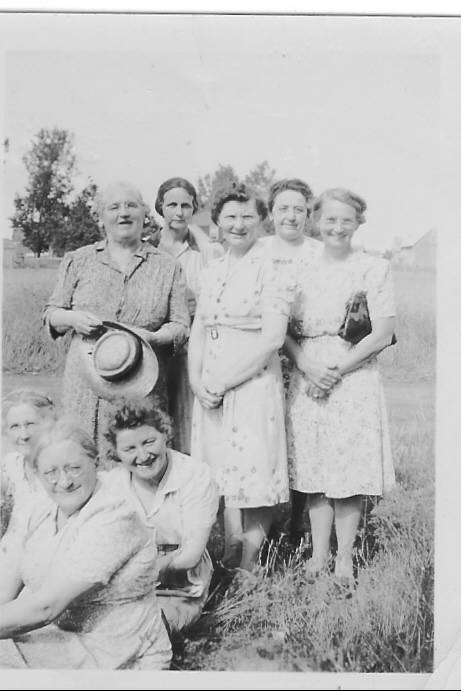

The Family Chronicle
No. 97 , 2005
____________________________________________________________________

Front: Janet Godfrey, Jane Glendenning and Mona Landry. Back: Bioney MacDougall, Lottie Mills, Alice Watling, Unknown and Marion MacLean. Thanks to Ken Glendenning for the additional names
The ashes were hardly cold on the First Community Hall (Burned to the ground about midnight, August 24, 1932) when planning began for the second. A note in my father’s hand dated November 1, 1932 provides a quick list of the lumber required. It reads:
Lumber needed to build hall - dated November 1, 1932
9000 ft boards planed one side
300 ft 1x6 planed one side
500 feet pine finish boards planed 2 sides
1600 ft 2x6 planed one edge 16 ft long
2500 ft 2x5 planed one edge
200 ft 1x5 planed one edge
32 2nd clear shingles
32 pieces 2x8 23
10 pieces 3x8 23
62 pieces 2x8 12
The new hall was put to use in July 1934; that was a busy month with three events producing income, the first for the new building. The first was a field day on July 12 at which ice cream brought revenue of $9.45; a dance on July 13, 1934 with proceeds before expenses of $26.65. and a “Program at Hall” on July 26 put an additional $15.00 in the coffers. 1934 ended with a positive balance of $7.12.
Little is known about construction activities during 1935 except for the purchase of shingles and nails and some people were paid for shingling. While the hall continued to be used from then on, it appears there was little in the way of construction.
In June of 1939 or 1940. Jane Glendenning made a loan of $300; it was repaid over the next 3-4 years.
It appears that a well was drilled on the site in the spring of 1947 with the purchase of 60 feet of one and one-quarter inch pipe from the Lounsbury Co. and casing from Everard MacLean. A payment was made to Everard for drilling the well and Wallace and Downey provided some pipe fitting service. The hall was wired in the fall of 1948 and incurred an electric bill of less than $3.00 per month for each of the next few months.
Records show rent of $6.00 from the rifle club in December, 1952. The upstairs area was opened up and developed for indoor shooting practice. The end of the building nearest the road was sandbagged and metal plates were inserted in the wall for safety. I recall going to the hall for target practice.
In 1967 Canada celebrated its centennial as a country. To mark the event, communities were invited to undertake significant local events for which financial assistance was available. Black River decided to undertake a major renovation including new stairs at front of hall, upgrading the second floor and new washrooms.
In February, 1973, disaster struck and the Black River Centennial Hall was again consumed by fire
On June 12, 1937 Alberta Jack blew into Black River. He rented the Community Hall for a fee of $5.00. Dressed in flashy western clothes, he provided a couple of hours of western music and corny jokes. It was a beautiful summer evening; the hall was packed. I was there but cannot remember the cost of tickets.
Bob sled
I had an email recently from a woman in Minnesota wondering if I had a photo of a set of bobsleds. I don’t – but I would love to obtain one and would publish it in this newsletter. If you have one and are willing to share it, please send it along either electronically or by snail mail.
The Chronicle is an occasional newsletter published by Don Glendenning and posted on the family website. It is intended to share information about my family, community and the times in which I grew up. While every effort is made to be accurate, errors are likely to occur. Comments, enquiries and information may be sent to 62 Queen Elizabeth Drive, Charlottetown, PEI, C1A 3A9. Tel:902 892 5859. Email: dglende@auracom.com Web: www.glendenning.net/don